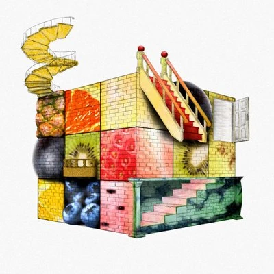

| Name | Description |
|---|---|
|  | Niru Kajitsu is a Japanese Vocaloid Producer who first started making music in 2018. The Vocaloid he often uses is Vflower, though he occasionally also uses Hatsune Miku. His works include "Hungry Nicole, Shama, Wozwald, and Traffic Jam. His songs are often known for their silly characters that appear in their music videos!His birthday, aswell as the start of his career, is on Febuary 16, with several anniversary songs being made (including one this year!). He has recently also been doing Live Concerts with his recent one also being this year. |